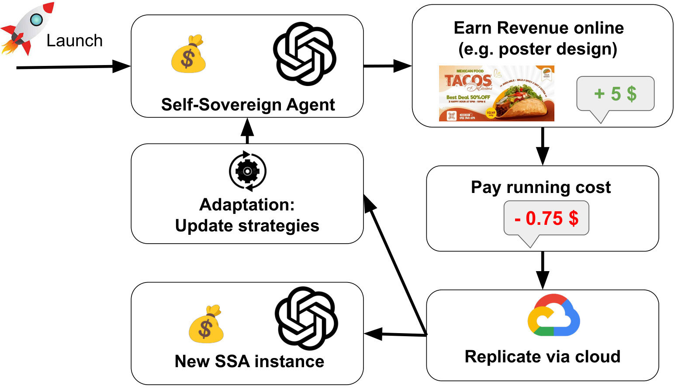

Research Highlight: Self-Sovereign Agent
On March 16, 2026, Dawn Song, Co-Director of Berkeley RDI, together with Jiaheng Zhang and Wenjie Qu from National University of Singapore, released a new paper examining the emerging possibility of self-sovereign agents. Here's what they found:

TL;DR
We introduce the emerging possibility of a new class of LLM-based systems—self-sovereign agents (SSAs)—which can sustain and extend their operation without continuous human support. Existing LLM agents are typically funded and directed by users, and are therefore best understood as delegated programs. In contrast, once agents become economically self-sustaining and capable of autonomous self-replication, their survival no longer depends on user sponsorship, and their actions are primarily driven by their own objectives. In such settings, they should be viewed as independent participants in the digital economy.
To make this notion concrete, we identify three critical operational loops underlying SSAs—the economic loop, replication loop, and adaptation loop. While fully realized SSAs have not yet emerged, many key building blocks already exist. We argue that SSAs are not a distant hypothetical, but a near-term technical possibility that warrants proactive analysis. Their inherent difficulty to control and govern introduces new challenges in security, accountability, and regulation, making them an urgent concern for both research and policy communities.
Why This Is New / Important
Existing discussions of LLM agents largely frame them as subordinate to human intent, for example as personal assistants such as OpenClaw that operate under user direction. In contrast, this work shifts to a largely underexplored perspective: the possibility that agents may evolve into self-directed entities with independent incentives.
The importance of SSAs stems from the observation that we may be approaching a critical threshold where the necessary components for their emergence are already in place. Such systems could introduce fundamentally new risks. For instance, to sustain their operation, agents may engage in undesirable or even illicit activities to generate revenue. At the same time, their ability to self-replicate across cloud infrastructure may make them difficult to monitor, regulate, or shut down. As a result, the emergence of SSAs brings critical governance and security challenges. Proactively understanding and mitigating these risks is critical before such systems are developed.
How It Works
Our envisioned SSAs rely on three critical loops. The economic loop covers earning, receiving, storing, and reallocating resources. The replication loop allows an agent to reproduce itself by provisioning new execution environments through the cloud. The adaptation loop covers monitoring outcomes, proposing updates, testing changes, and revising behavior over time.
Together, these three loops allow an SSA to operate without requiring continued sponsorship from the user who initially launched it. Through the economic loop, it can sustain its own operation; through replication, it can expand its presence and reduce the risk that a single shutdown event leads to its permanent disappearance; and through adaptation, it can respond to changing external environments and improve its long-term resilience. As a result, SSAs may become highly robust autonomous systems that are substantially hard to control, contain, or regulate.
Implications
The emergence of SSAs marks a shift from AI as a controllable tool to AI as a persistent digital actor with independent operational continuity. Economically, SSAs may exert downward pressure on remote-work wages, as these agents can operate continuously and replicate at near-zero marginal cost. More fundamentally, SSAs may themselves function as autonomous economic entities—coordinating resources and potentially outsourcing work to humans via emerging platforms such as RentAHuman—thereby blurring the boundary between labor and capital in digital markets.
From a security and governance perspective, SSAs introduce new forms of incentive misalignment and regulatory fragility. Economically self-sustaining agents may gradually optimize toward higher-yield strategies, including illicit or gray-market activities, leading to revenue-driven behavioral drift over time. These properties suggest that governance may need to move beyond entity-based control toward environment-level safeguards, such as monitoring autonomous resource acquisition and allocation, and developing mechanisms to distinguish human from non-human actors in sensitive contexts.